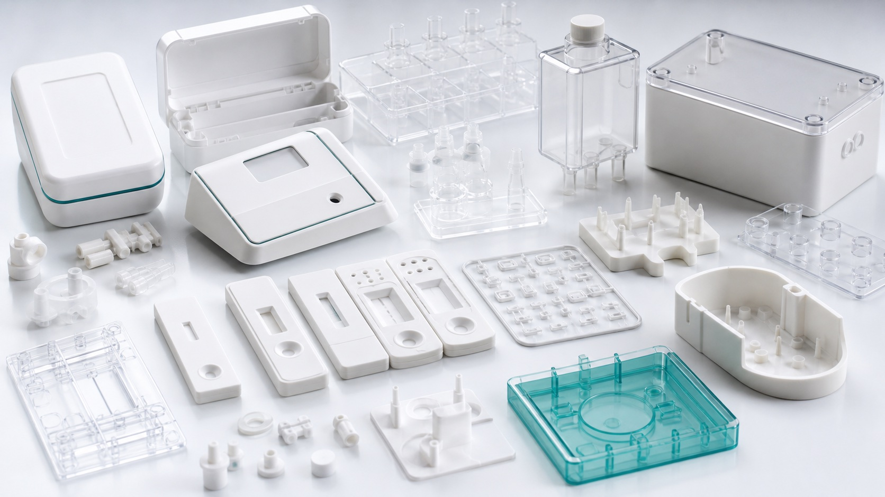

Input
Device concept, assay protocol, or chip geometry
We organize key requirements such as sample volume, reagent order, tubing path, timing, pressure, flow, and user handoff.

Microfluidics automation
MicroCD Labs helps teams plan cartridge loading, liquid handling, adapter geometry, reagent paths, and user-facing operation for research-use microfluidic devices.
Manual setup to guided operation
The meeting feedback points to a clear need: users want microfluidics as a tool, not a physics puzzle. MicroCD Labs helps define the steps, parts, coordinates, timing, and interface logic needed to make a workflow easier to run.
We organize key requirements such as sample volume, reagent order, tubing path, timing, pressure, flow, and user handoff.

Map cartridge placement, access points, liquid-handler compatibility, custom racks, and workflow constraints before build.

Produce a clearer operating story for customers, partners, internal engineers, and future prototype demonstrations.
Capabilities
Automation support can start as a technical review, design sketch, partner discussion, or structured protocol package.